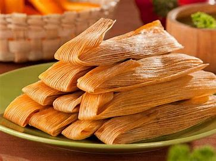

COMIDA TRADICIONAL
La comida de la Ciudad de México es una mezcla vibrante de sabores tradicionales y modernos. Entre los platillos más populares están:
Tacos al pastor: Carne de cerdo en trompo, con piña y salsa.
Tamales: Masa de maíz rellena de carne, pollo o dulce, envuelta en hojas de maíz.
Mole: Salsa espesa y rica, usualmente servida con pollo o pavo.
Quesadillas: Tortillas rellenas de queso y otros ingredientes como flor de calabaza o huitlacoche.
Chiles en Nogada: Chile poblano relleno de picadillo con una salsa de nuez, ideal en septiembre.
Tacos de canasta: Tacos de diferentes guisos, vendidos en canastas.
Esquites y elotes: Maíz cocido servido con mayonesa, queso, chile y limón.
La CDMX es también famosa por su comida callejera en mercados como La Merced y San Juan, y sus restaurantes de alta cocina, como Pujol.
En resumen, la comida en la ciudad es deliciosa, variada y un verdadero festín para los sentidos.
